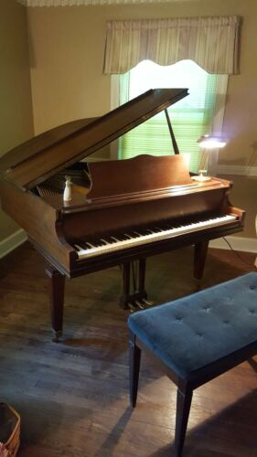

Ran Blake |
Sonny Clark |
Blossom Dearie |
Kenny Drew |
Bill Evans |
Ahmad Jamal |
Wynton Kelly |
Thelonious Monk
Chord Voicings
When I create an arrangement for a piece,
I like to focus on the melody tone as the top tone of the chord,
rather than as an entity that exists separately from the harmony.
I have considered each possible melody tone over each type of harmony.
For example, I have put together a list of mionr chord voicings
with each possible melody tone at the top. Each number represents the
scale degree, 1 being the root. Notes listed to the left of
the comma should be played in the left hand, while notes to the right
of the comma should be played in the right hand.